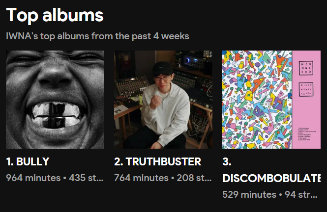

어제(03/28)의 글에서 칸예 웨스트의 BULLY에 대한 혹평을 남겼는데, 계속 듣다 보니 왠지 좋아지는 것 같기도 하다. 글을 쓰는 시점인 3월 31일을 기준으로(이틀 지각했다), 3일동안 이 앨범만 1000분 가까이 들었다.

엄밀히 말하면, 앨범 자체가 좋아서 많이 들었다기보다는 많이 들어서 좋아지게 된 것 같다.
"아 너무 실망인데... 한 번만 더 들어볼까"
"아 역시 별로인거같은데... 한 번만 더 들어볼까"
"좀 괜찮은 거 같기도 한데... 한 번만 더 들어볼까"
이걸 3일동안 계속 해온 것이다. 그냥 단순 노출 효과인 건지 아니면 내가 이 앨범의 진가를 깨닫게 된 건지 모르겠으나, 어찌되었든 "듣기 싫은 앨범"이 아니게 된 것은 확실하다.
그럼에도 불구하고, 유출버전을 다시 들으면 "역시 이게 진짜 BULLY지.." 라는 느낌은 지울 수 없다. 적어도 먼저 유출이 된 적 있는 곡들에 한해서는 모든 곡이 너프되었다고 생각한다.
昨日(03/28)の文でカニエ・ウェストのBULLYに対する酷評を書いたのだが、聞き続けているとなんだか好きになってきた気がする。文を書いている時点の3月31日を基準に(2日遅刻した)、3日間でこのアルバムだけを約1000分近く聴いた。
厳密に言えば、アルバム自体が好きだからたくさん聴いたというよりは、たくさん聴いたから好きになったのだと思う。
「あ…すごくがっかりだけど…もう一回だけ聴いてみようか」
「やっぱイマイチな気がするけど…もう一回だけ聴いてみようか」
「思ったより悪くない感じかも…もう一回だけ聴いてみようか」
これを3日間続けてきたのである。単なる単純接触効果なのか、それとも自分がこのアルバムの真価に気付いたのかは分からないが、いずれにせよ「聴きたくないアルバム」ではなくなったことは確かだ。
それにもかかわらず、流出バージョンを再び聴くと「やっぱこれぞ本物のBULLYだわ…」という感覚は消えない。少なくとも以前に流出したことのある曲に限っては、すべての曲がナーフされたと思っている。
※タイトルの「脳エイジング」の意味について:
脳+音響機器のエイジング(機器の老朽化に伴い音が変化すること)の合成語。韓国で「音楽などを繰り返し聴くことによってそれがだんだん好きになること」を意味する。